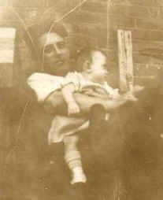
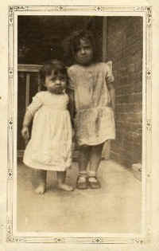
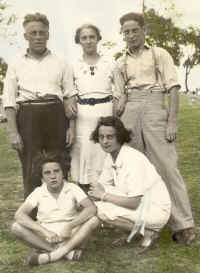
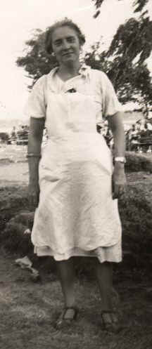
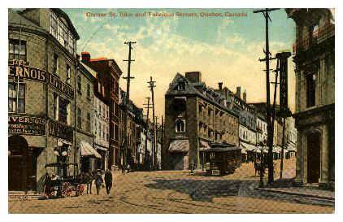
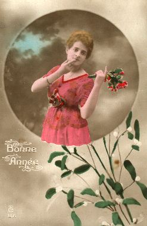

|
|
LA
DESCENDANCE DE CHARLES ET ÉZILDA
Charles et Ézilda ont cinq enfants. Arsène, né le 10 février
1921. Son parrain est Antoine Consigny et sa marraine, Ernestine Consigny, tante
et oncle de l'enfant.
Arsène épouse Marthe Chaput le 21 décembre 1946. Fabiola
née le 4 octobre 1922. Son parrain est Joseph Roch, cordonnier à Maisonneuve,
et sa marraine, Docilia Côté, son épouse, tante de l'enfant.
Fabiola épouse Elphège Daoust le 29 juin 1946.  Jacqueline
née le 7 août 1926. Son parrain est Onésime Desjardins et sa marraine,
Blanche Côté, son épouse, tante de l'enfant. (Photo ci-contre.
N.B. Francine a encore cette petite chaise d'enfant) Jacqueline
née le 7 août 1926. Son parrain est Onésime Desjardins et sa marraine,
Blanche Côté, son épouse, tante de l'enfant. (Photo ci-contre.
N.B. Francine a encore cette petite chaise d'enfant)
Jacqueline épouse Gérard Charette le 29 juin 1946, son parrain est son
témoin.
Jeanne
née le 13 septembre 1929. Son parrain est Azarias Côté, oncle de l'enfant, et sa marraine, Jeanne
Perreault.
Jeanne décède le 13 juin 1936 et est inhumée le 22 juin au Cimetière de
l'Est. Pourquoi un tel délai??... Les témoins sur l'acte de sépulture sont son père et son parrain. Jacqueline
a souvent raconté que sa petite soeur disait "moi, je n'irai jamais à
l'école". Comme de fait, elle est morte à la maison, peu avant
sa première rentrée scolaire. Elle aurait "perdu des chaudières de
sang et aurait grandi rapidement, en quelques jours seulement, de telle sorte que la tombe que l'on avait
amenée pour elle à la maison était trop petite..." C'est loin
d'être un diagnostic précis de maladie, mais c'est le récit transmis par
Jacqueline et Ézilda, et qui découlait du rappel des moments difficiles
vécus lors de la maladie et du décès de la petite Jeanne. (souvenir de Nicole qui a entendu raconter cette
histoire plus d'une fois)
Aurise
née le 5 janvier 1933. Son parrain est Émilien Côté, oncle de
l'enfant, et sa marraine, Aurise Roch. Émilien est encore célibataire et
la marraine est probablement une nièce, une fille de Docilia Côté-Roch, soeur
d'Ézilda et d'Émilien.
Aurise décède le 1 mars 1933, elle est inhumée au Cimetière
Notre-Dame-des-Neiges le 2 mars.
|
|

Charles sur le balcon
avec un de ses enfants
|

Arsène, Fabiola et Jacqueline vers 1928, dans la cour arrière du 2179
Létourneux
|

Jeanne et Jacqueline sur la galerie
avant du 2179 Létourneux
|
|

(Cliquez sur cette photo pour
les voir en grand)
Vers 1938, la famille Consigny en
pique-nique
Au premier plan, Jacqueline et Fabiola.
Debout, Charles, Ézilda et Arsène.
Cette photo a été prise un dimanche
ou un jour de fête, au jardin Botanique ou au Parc Maisonneuve,
tout près de leur domicile.
C'est l'occasion pour
rencontrer la parenté puisqu'en fait tous les Consigny et les
Côté vivent dans Maisonneuve, mais ils n'ont pas les moyens de se recevoir
tous à la fois dans leurs petits logements. J'ai déjà vu une photo de
groupe de ce même pique-nique.
Un pique-nique où l'on
s'amuse, on mange bien, on revoit la parenté, on prend du bon air.
C'est l'activité par excellence durant l'été pour ces gens qui n'ont
pas les moyens financiers, et de transport, pour avoir des chalets à la
campagne.
Jacqueline gardera le goût des pique-nique et en organisera pour ses
enfants, à Saint-Luc ou à l'île Sainte-Hélène, et ailleurs à
l'occasion.
|

Toujours le même jour, Ézilda porte
un tablier, elle prépare le repas. À l' époque il n'y a pas de "prêt-à-manger"
et les pique-nique sont un véritable repas pris en plein air. Elle ne doit
pas tacher sa robe, ce qui gâcherait sa toilette pour le reste de la
journée.De plus, la lessive est une tâche difficile, accomplie chaque
lundi, et les gens ont peu de vêtements (il n'y a qu'une petite
garde-robe pour tous dans le logement).
|
|

|
|
DES CARTES POSTALES ADRESSÉES À LA FAMILLE
CONSIGNY |


Monsieur Charles Consigny
2055 St-Catherine 3è étage
Montréal Est
Chers frère et belle-sœur.
Je t’écrit quelque mots pour te dire que nous arrivont à 6.30 minutes
à la gare windsor samedi soir
Au revoir Antoine
Carte d'Antoine, frère de
Charles. À cette époque on s'écrivait, puisque le téléphone
n'était pas encore très répandu. Cette carte date du début des années
1920 car l’adresse est celle de la mére d'Ézilda, Georgiana Côté, avec
laquelle le jeune couple a sans doute habité jusqu'à ce qu'ils entrent
dans leur logement au 2179 Létourneux en 1925.
À noter qu'Antoine épouse Ernestine Leroux, dans Maisonneuve, le 17
novembre 1920 et
s'installe lui aussi à Montréal. Cette carte annonce peut-être leur
retour d'un voyage de noces qu'ils auraient passé à Québec.
|
|
|
Les deux cartes ci-dessous
sont des cartes de voeux pour la nouvelle année envoyées de Québec
par Crescence, Mme
Rolland Pleau, à son frère Charles et à son neveu Arsène.
Ces cartes datent de la deuxième moitié des années
1920. Crescence et Rolland vivent d'abord dans le quartier Saint-Sauveur, puis,
dans Limoilou. Crescence serait décédée à la fin des années 1940,
et Rolland se remarie en 1950 (Réf:BMS2000). |
|


Cher Frère
Bonne et heureuse
année la santé
de l’ouvrage afin de gagner beaucoup et l’accomplissement de
tous vos désirs Ta sœur Crescence


Cher
petit neveu
Je te souhaite une
bonne santé de faire
un bon
petit garçon et t’écoute ton père et ta mère
De ta tante Crescence
|
|

|
|
 CHEZ
LES CONSIGNY
CHEZ
LES CONSIGNY